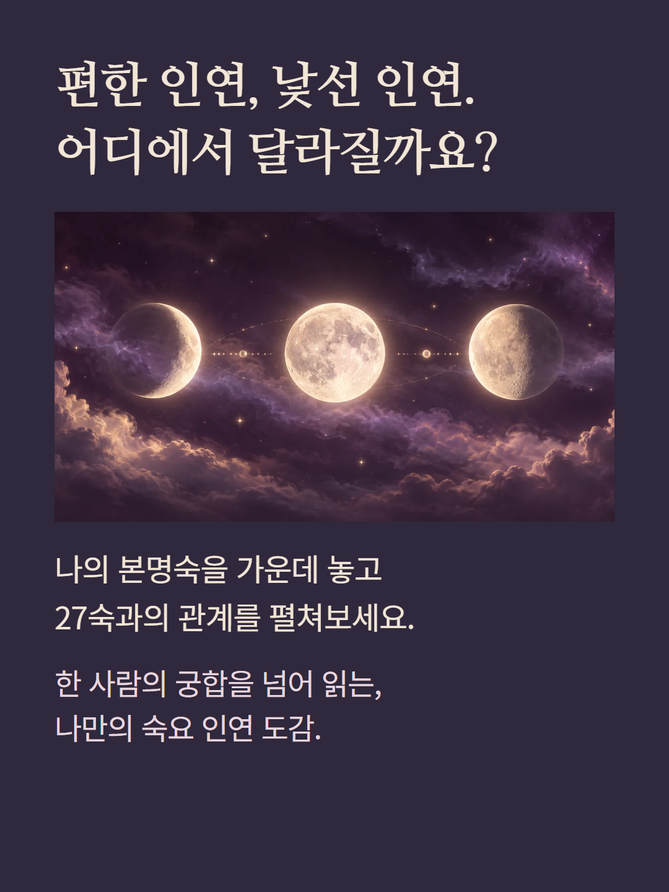
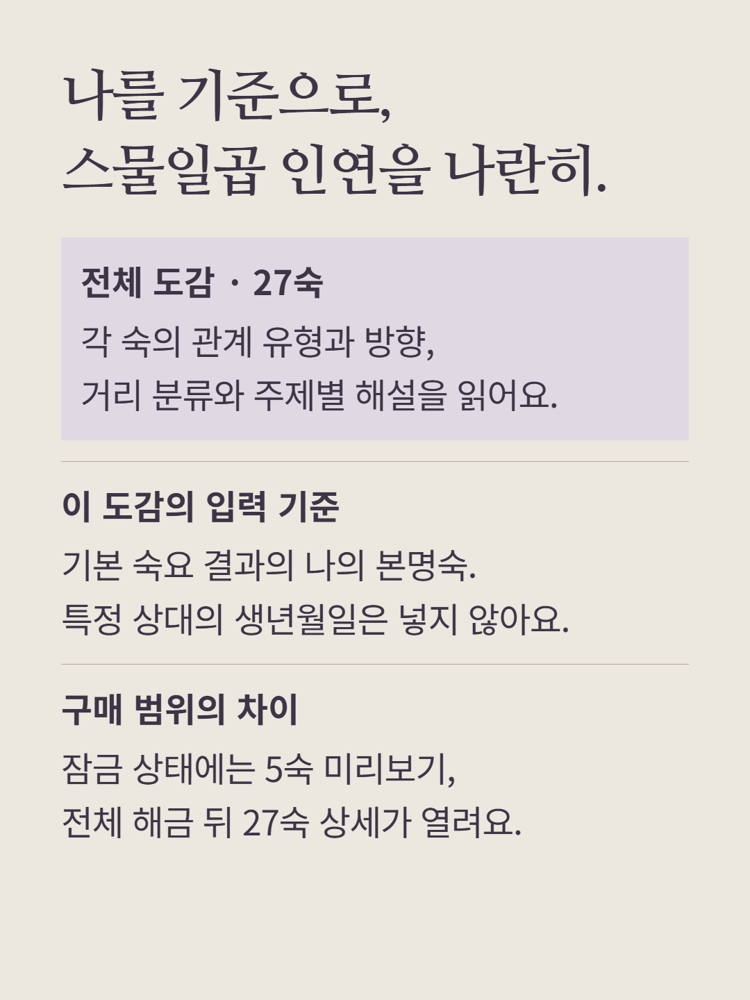
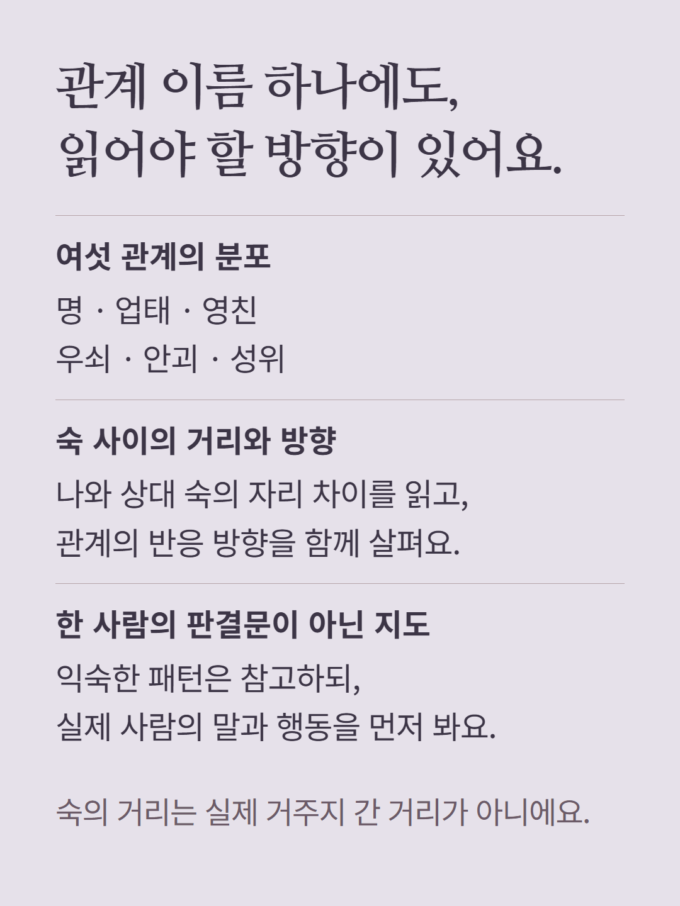
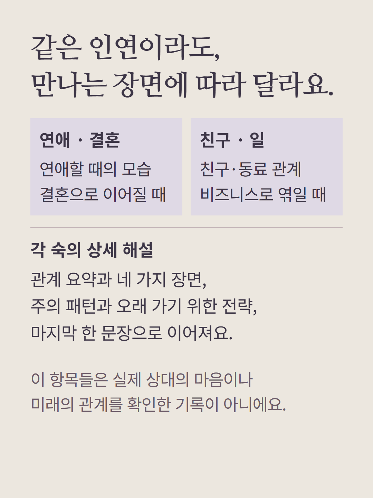
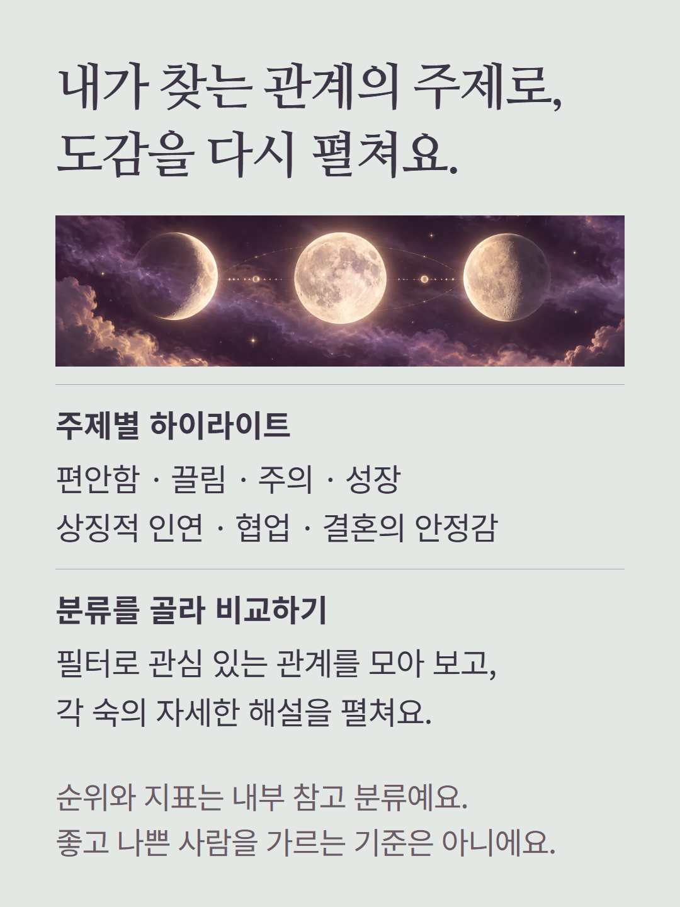
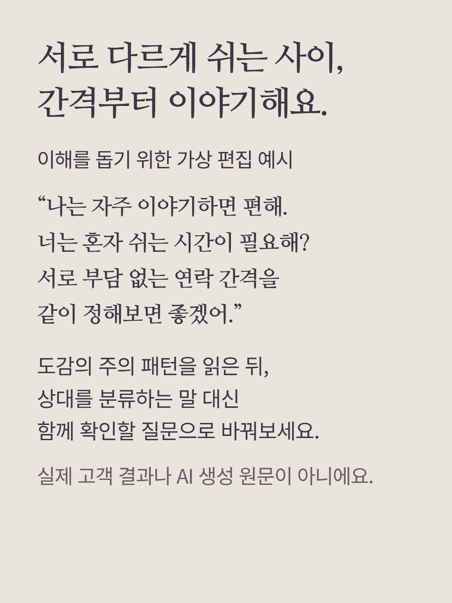
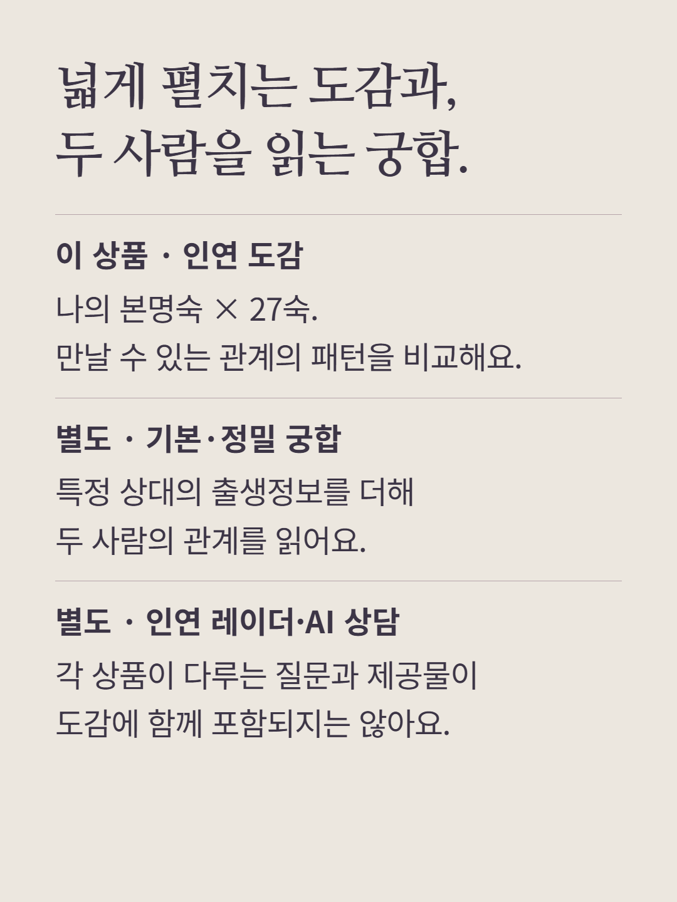
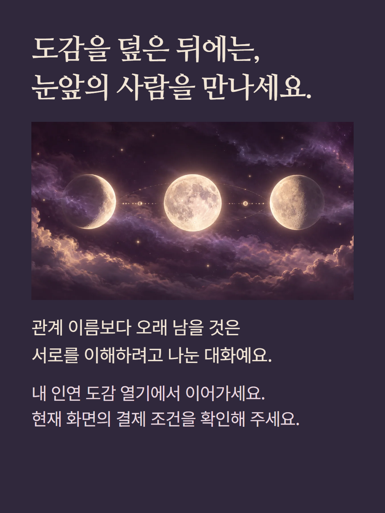

나의 본명숙을 기준으로 27숙 각각과 맺는 관계를 펼치는 인연 도감입니다. 전체 해금 뒤 27개 항목의 관계 유형·거리·방향·태그와 내부 지표, 요약·연애·결혼·친구와 동료·비즈니스·주의 패턴·오래 가는 전략·한 문장 해설을 읽습니다. 관계 유형 분포, 주제별 하이라이트와 필터도 제공합니다. 잠금 상태의 5숙 미리보기와 전체 해금 범위는 다릅니다. 특정 상대의 출생정보를 입력하는 기본 궁합이나 정밀 궁합과는 별도입니다. 숙간 거리는 거주지 간 거리가 아니며 지표와 순위는 내부 참고 분류입니다. 실제 성격·감정·결혼 가능성·사업 성과·전생의 사실을 판정하지 않습니다. 예시는 가상 편집이며 현재 화면의 가격과 결제 조건을 따릅니다.